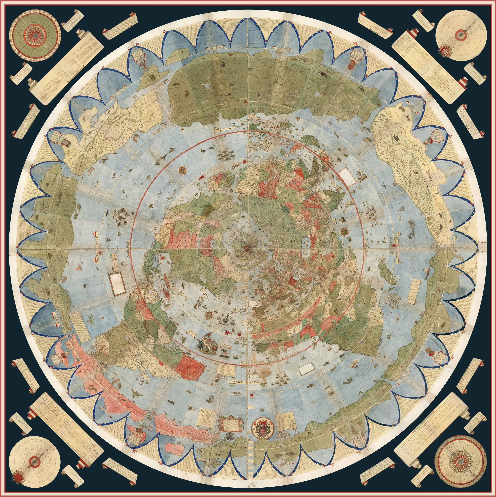
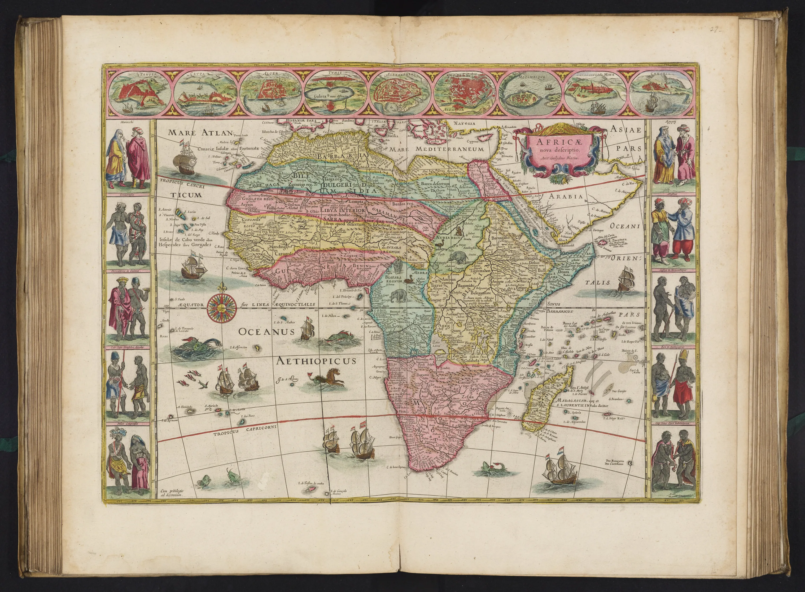
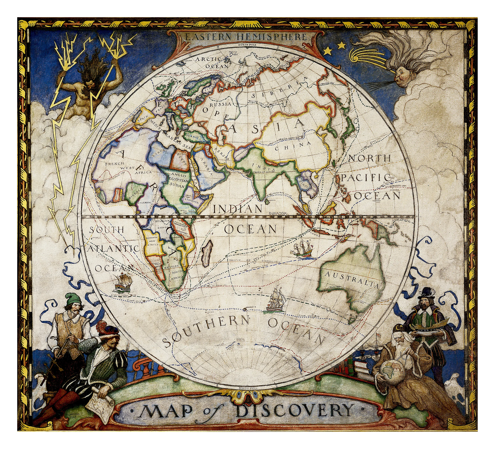
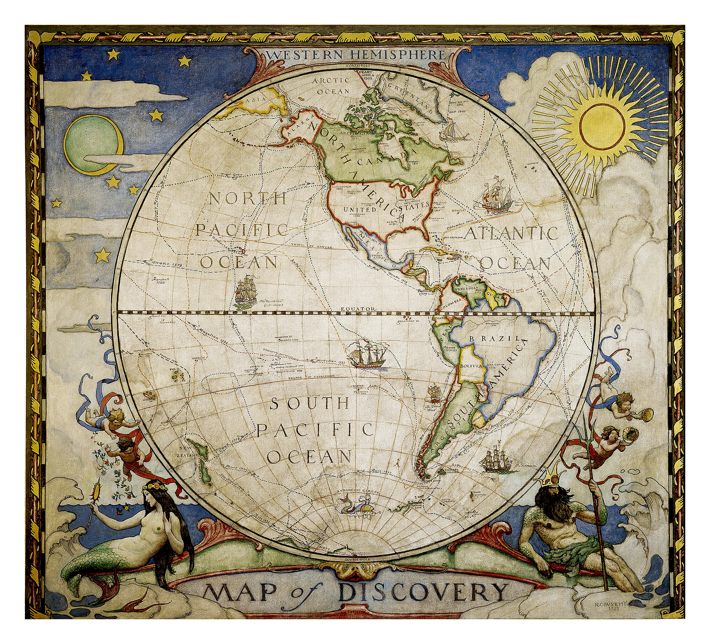

Alte Karten

« Weltkarte » von Urbano Monte (1587). Eine der außergewöhnlichsten kartographischen Leistungen der Renaissance und die größte bekannte Weltkarte des 16. Jahrhunderts.
David Rumsey Map Center Stanford University Libraries

"Africae nova descriptio" von Joan Blaeu (1665)
David Rumsey Map Center Stanford University Libraries

"Karte der Entdeckungen" von N.C. Wyeth (1928)
David Rumsey Map Center Stanford University Libraries

"Karte der Entdeckungen" von N.C. Wyeth (1928)
David Rumsey Map Center Stanford University Libraries